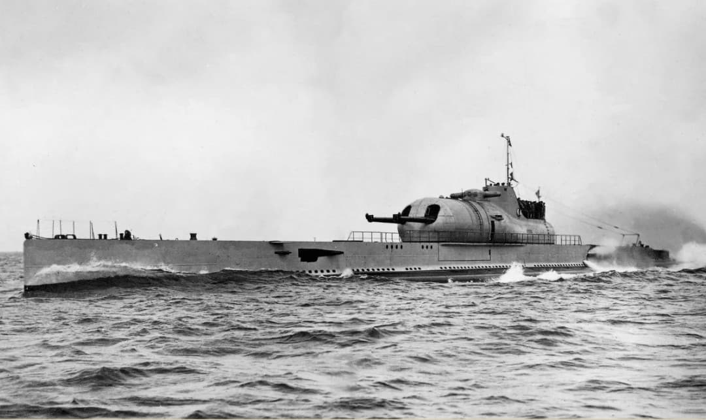
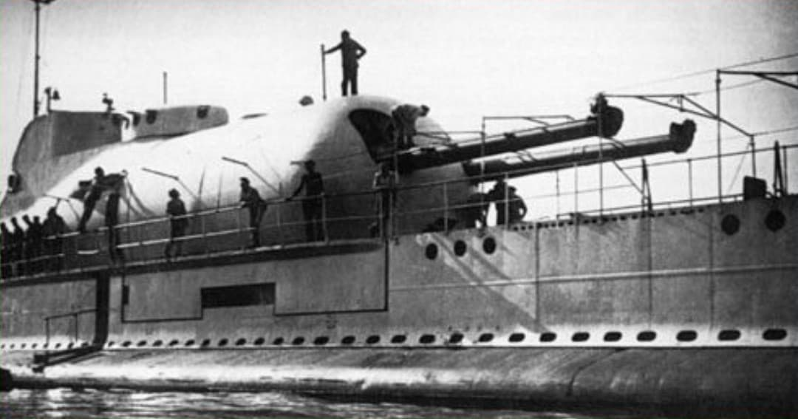
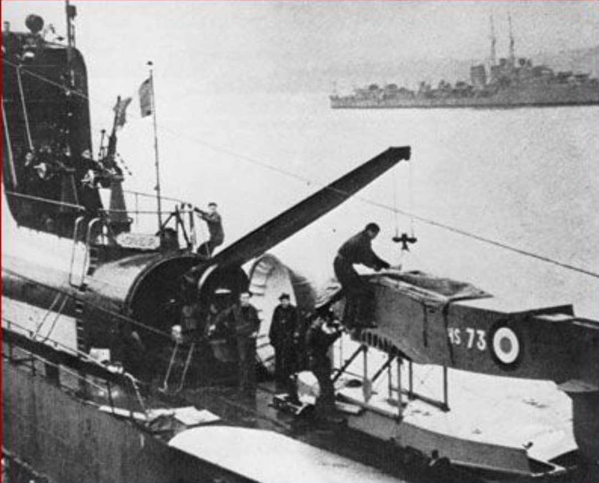
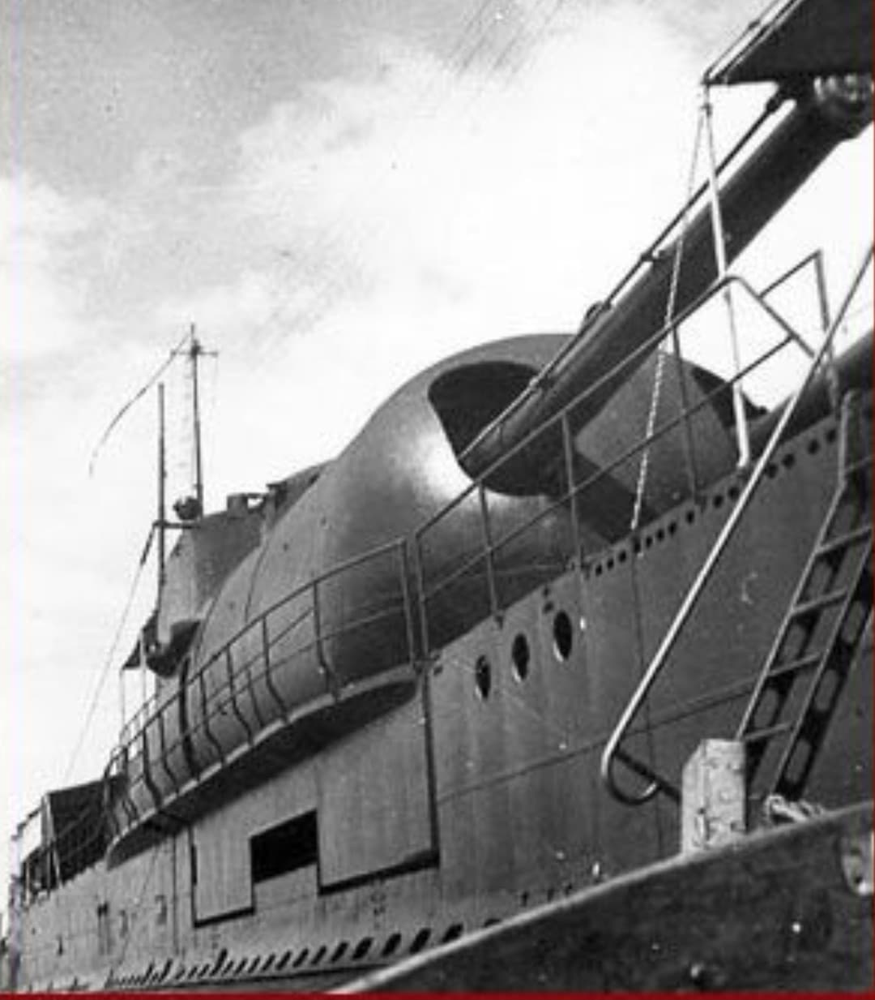

Mis en service en 1934, le Surcouf est le plus grand sous-marin du monde de son époque. Conçu comme un croiseur sous-marin, il combine puissance de feu, autonomie et capacités de reconnaissance uniques. Sa tourelle cuirassée de 203 mm et son hydravion embarqué en font un navire totalement atypique dans l’histoire navale.

Type : Croiseur sous-marin
Lancement : 1929 — Entrée en service 1934
Longueur : 110 mètres
Déplacement : 4 300 t surface — 4 600 t plongée
Vitesse : 18 nœuds surface — 10 nœuds plongée
Autonomie : 12 000 km
Équipage : 118 hommes
Armement principal : 2 × canons de 203 mm (tourelle cuirassée)
Armement secondaire : 4 × 37 mm, 2 × 13,2 mm, 12 tubes lance‑torpilles
Aéronef embarqué : Hydravion Besson MB.411

Le Surcouf est le seul sous-marin au monde équipé d’une tourelle de croiseur léger. Cette tourelle double de 203 mm permettait des tirs de surface à longue distance, avec un système de pointage complexe et un poste de conduite de tir intégré.

Le Surcouf embarquait un Besson MB.411, rangé dans un hangar étanche. Cet hydravion de reconnaissance permettait d’observer l’horizon, repérer des cibles ou guider les tirs d’artillerie. Une innovation unique pour un sous-marin.
